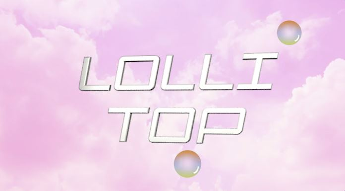
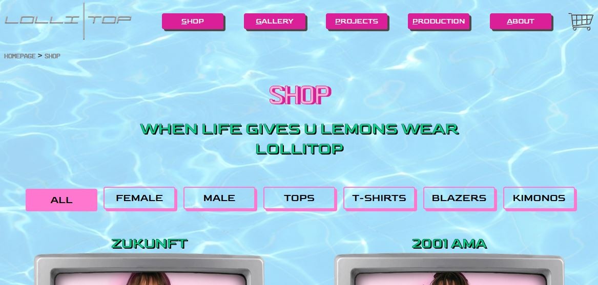
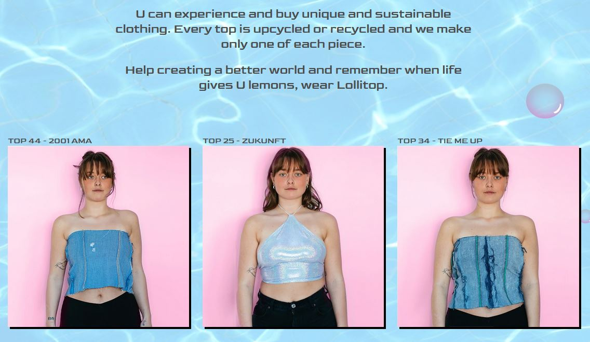
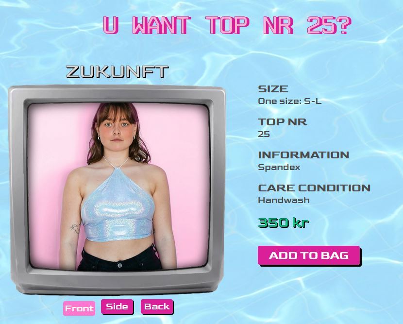

Lollitop
 To see the website click hereTo the 2. semester examens project we worked with a newly started upcycling cloth brand called Lollitop, who is so far only selling their cloth through their Instagram profile Lollitop8000. That is also exactly why we decided to work with them, we wanted to create an informative site about the brand that also featured a web shop to make buying their cloth easier for the costumer.
Project length: 1 month
Project finished: Mid December 2020
An interesting project
This project was an interesting one to do, because Lollitop had this
weird style called Y2K we had to work with, which do not like
conventions.
I mean, seriously, watch their launch video on Instagram Lollitop8000
you’ll understand.
It made it difficult to make a user friendly web shop that didn’t look
like a scam.
From the brand owner there was a wish that the site and brand should be as much as an art piece as cloth you would wear in special occasions. So, we wanted to make the site and experience that both show the user the brands style and identity and gives the user a place to buy the product that is not Instagram. To do so the first thing you see on the website is a giant logo that rotates and play a song made for the brand when hovering over it. We also programmed a parallax effect for some bubbles inspired by a parallax solution fund on the internet. This way the user gets a taste of the brands identity immediately.

A challenging style
One of the problems working with the Y2K style was how easily the website got confusing to look at, because of the many colours and elements. The way we tried to fix that was by changing the name of the products colour to a neutral grey white colour and got rid of the background colour for the navigation bar buttons. If we had to work further with this project, we would probably try to find a less attention-grabbing background, which also makes it faster to load the website on your phone.
Want to show what makes the brand unique
Other than their style and identity, another thing that makes Lollitop unique is that there only exist one version of each cloth piece they sell, so every time a piece of cloth is displayed so is the cloths unique number and name, because that is a way Lollitop could stand out from their competitors, if the weird style isn’t enough.
To make sure people know Lollitop are selling cloth, we wanted to make it easy and quick to get a preview of the cloth they are selling, so that is the next thing you see on the front page. To make it convenient, you can click on the previewed cloth to go directly to the product’s page.
My main contribution
The part of the project I worked on the most is the shop page and
the pages for each product, where you can buy and learn more about
the cloth you are interested in. The overall design for those pages
was a shared effort by the whole group.
However, the TV-frame was my idea and I wanna take credit for that,
‘cause I made 12 different versions of that frame, so it wouldn’t
fill too much in the design and take the focus away from the products.
It was pretty fun to do though, and I learned some new tools in Photoshop.
Anyway, to make browsing through the products simple and easy on
the shop page, we only show the product, its unique name and number
and the price. For easier and intuitive browsing I made a simple
category system, so the user can easily find those products they
are interested in.
On the pages for each individual product, there was a wish from the user to be able to see the cloth from different angles. To make that easy and intuitive, I made 3 clickable buttons with the names Front, Side and Back, when clicked they show the product from the angle they are named with.
